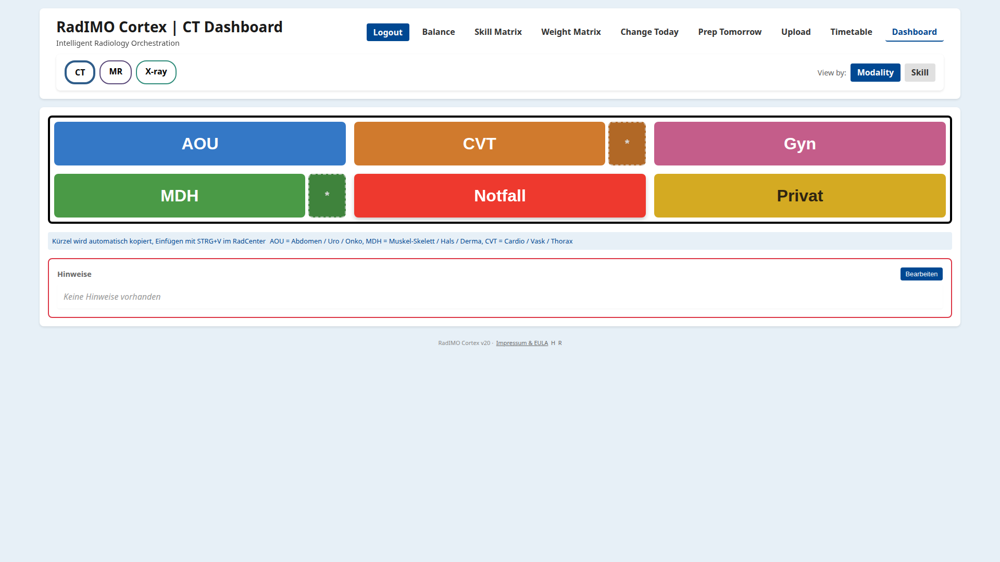
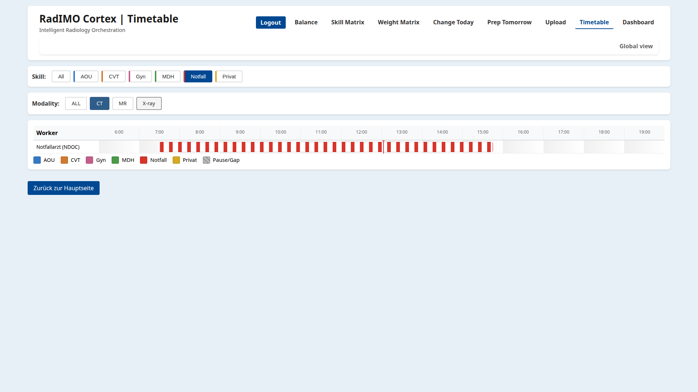
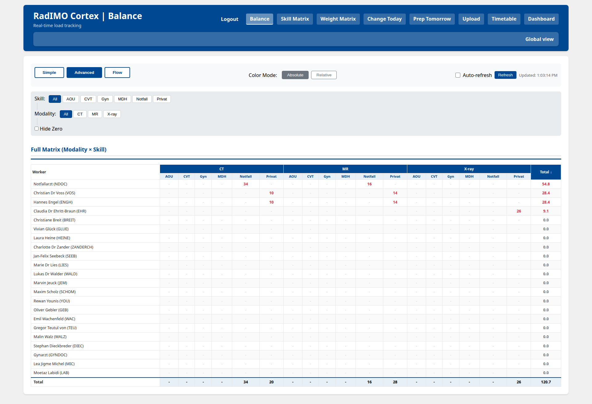

Put the right work with the right people
Route buttons and work packages using the team’s modality and skill matrix, with specialist-only options where the workflow requires them.
Radiology workload orchestration
RadIMO Cortex turns the daily schedule into a shared operational view. It helps teams route work by modality, skill, availability, and current load while leaving clinical responsibility with the radiologist.

Cortex supports the organisation of radiology work. It does not interpret images, make clinical decisions, or replace the responsible team. Assignment rules remain configurable, visible, and reviewable.
Product
Cortex brings the information people use to distribute work into one place: who is available, what they cover, how the schedule is changing, and where the current load is accumulating.
Route buttons and work packages using the team’s modality and skill matrix, with specialist-only options where the workflow requires them.
Work-hour-adjusted balancing, weights, and live load views help coordinators understand why work is being distributed as it is.
Handle gaps, meetings, sickness, coverage changes, and next-day preparation without rebuilding the whole operational picture.
Built around the team
The interface stays close to the team’s working language: modalities, skills, shifts, assignments, and load. Each view answers a different practical question.
Use the modality or skill dashboard to make the next assignment with the current availability and routing rules in view.
Read shifts, gaps, meetings, and coverage on a shared timetable instead of piecing them together from separate lists.
Prepare a staged future day, apply filters, and make targeted changes without altering today’s live counters.
Review simple totals or the advanced modality-by-skill matrix to see where load is concentrated and where capacity remains.

From decision to context
The live dashboard answers the immediate question. The timetable explains the surrounding context. The load view shows the accumulated effect. Together they support a calmer handoff between coordination and reporting.
Read the daily workflow →Typical flow
Upload the current Master CSV and let the configured mapping turn it into a working day.
Account for skills, shift windows, gaps, coverage changes, and a staged plan for the next day.
Use live routing, monitor the resulting load, and keep operational changes visible to the team.
Team reality
Radiology days change. A colleague is pulled into a board, a shift starts late, a specialist is needed for a particular work package, or tomorrow’s plan needs to be adjusted before anyone arrives. Cortex keeps those changes close to the operational surface.

Guardrails
Eligibility, weights, overflow, and strict routing are configured as operational rules rather than hidden behaviour. Status and logs provide a path to check readiness and understand what happened during the day.
Active, weighted, passive, and excluded capabilities are represented in the Skill Matrix.
Today and Planning are separate surfaces, so preparation does not silently rewrite the live day.
Health checks, logs, usage statistics, and managed-file views support review and handover.
Further reading